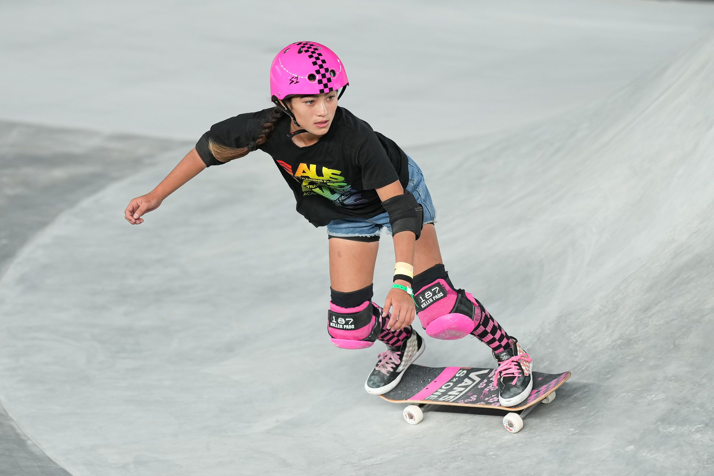
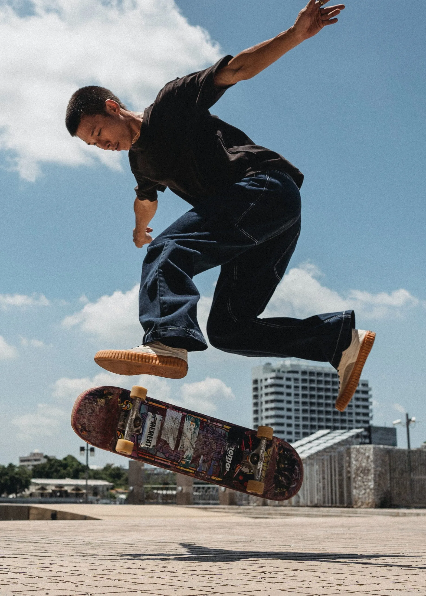

Skating, in its various forms, represents a dynamic fusion of athleticism, artistry, and self-expression. From the grace of figure skating on ice to the urban acrobatics of street skateboarding, each discipline within the skating world offers a unique blend of skill and creativity. Whether gliding on smooth surfaces with roller skates or conquering downhill slopes on a longboard, skating transcends mere physical activity, fostering a vibrant culture that embraces freedom, individuality, and a sense of community. It's a realm where enthusiasts—from casual skaters to dedicated athletes—find joy in the rhythmic motion, pushing the boundaries of what is possible on wheels, and celebrating the diverse subcultures that have emerged within this exhilarating world of motion.
Skating, be it on ice, wheels, or a board, is more than just a physical activity—it's a lifestyle, a culture, and a form of self-expression. Each variant of skating carries its own unique charm, from the artistry of figure skating to the daring maneuvers of street skateboarding. It's a world where enthusiasts carve their paths, whether on smooth rinks or gritty urban landscapes, showcasing not only their physical prowess but also their creativity. Skating is a celebration of freedom, where the rhythmic motion becomes a canvas for individual style and a shared passion that unites a diverse community. In this dynamic realm, skaters embody a spirit of exploration, pushing boundaries, and defying gravity, creating a culture that thrives on the thrill of movement and the bonds formed through shared experiences on wheels.
